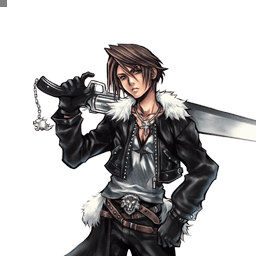
Final Fantasy VIII
Squall Leonhart
All-rounder de mêlée aux pokes rapides, fiable et accessible, roi de la depletion
Position dans la méta
Tier A+ 5ᵉ sur 30 — tier list tournoi 2017 de dissidia.wiki (moitié valeurs de matchups, moitié avis de joueurs experts).
Squall est classé 5e, en tier A+, sur la tier list compétitive de 2017. L'overview confirme un long historique de high tier, porté par un plancher d'exécution bas et des outils fiables.
Vue d'ensemble
Squall est un all-rounder de courte portée qui s'appuie sur sa mobilité et sur une panoplie de pokes variés. Au sol, Solid Barrel et Upper Blues sont des pokes rapides à faible recovery, parfaits pour remplir la jauge d'assist et lancer l'offense ; Thunder Barret aspire l'adversaire pour un combo, et le tracking puissant de Blasting Zone avec sa hitbox très haute punit les esquives imprudentes. En l'air, Heel Crush et Aerial Circle traversent la magie basse priorité, Fire Barret soutient son offense, et Beat Fang est l'exemple type du poke fort : 15 frames, tracking notable, recovery courte et gros potentiel de combo.
Squall exploite très bien les mécaniques du système, d'où des builds hybrides courants. Ses attaques à coups retardables se marient avec de nombreux assists, ses combos au sol finis par Revolver Drive génèrent énormément d'EX, et il est l'un des meilleurs utilisateurs de meter depletion du jeu avec l'assist Yuna. Même les builds Side by Side lui vont, ses HP (Blasting Zone, Aerial Circle) fonctionnant bien en neutral ; ses counters à l'Assist Change LV2 avec Aerial Circle sont fiables.
Il a toutefois des faiblesses : génération d'EX faible sans EX Cores ni combos au sol, difficultés contre les fast fallers qui air dodgent (Prishe) et les personnages très rapides (Onion Knight, Tidus), la plupart de ses coups ratant contre eux. C'est problématique car Squall dépend de ses esquives pour rester sain, alors qu'elles l'exposent sans vraie réponse. Ses routes de combo d'assist aériennes sont limitées, il ne capitalise pas toujours sur les Bravery Breaks, et il punit mal les blocks et les whiffs hors de portée de Beat Fang.
En compétitif, Squall a un long historique de high tier : plancher d'exécution bas et outils fiables pour beaucoup de situations en font une bonne recommandation pour les nouveaux joueurs comme pour les vétérans, même si certains personnages peuvent lui tourner autour.
Forces
- Moveset flexible et direct qui met à l'aise débutants comme joueurs expérimentés.
- Punition défensive facile et efficace grâce à Beat Fang, Blasting Zone et Aerial Circle.
- Gros potentiel de combo, surtout près du sol : combos solo variés, conversions d'assist et combos fiables vers les HP au sol.
- Synergie d'assist forte et diverse grâce aux attaques en plusieurs parties et au Wall Rush.
- EX Mode qui augmente exponentiellement la portée et les dégâts du gunblade.
- Meter depletion parmi les plus fortes du jeu, en particulier avec l'assist Yuna.
- Builds polyvalents qui soutiennent des styles de jeu et des matchups variés.
Faiblesses
- Défense post-esquive moyenne : ses air dodges flottants l'obligent à clasher avec Beat Fang ou à sacrifier de la récompense avec le build Adamant Chains.
- Génération d'EX médiocre en l'air, d'où une dépendance aux EX Cores.
- Sujet aux whiffs contre les déplacements rapides : plus de risques contre les fast fallers (Tidus, Prishe) et les coureurs rapides (Onion Knight, Tifa).
- Extensions de combo aériennes en dessous de la moyenne : sans Wall Rush, ses dégâts de bravery souffrent dans les combats très aériens.
Stats & vitesses
| Nom | Squall Leonhart (スコール・レオンハート) |
|---|---|
| Jeu d'origine | Final Fantasy VIII |
| ATK de base (LV100) | 109 (Low) |
| DEF de base (LV100) | 111 (Average) |
| Vitesse de course | 5 (Above Average) |
| Vitesse de dash | 77 (Average / Good) |
| Vitesse de chute | 81 (Average) |
| Chute après esquive | 38 (Average) |
| BRV la plus rapide | 13F (Upper Blues, Solid Barrel) |
| HP la plus rapide | 41F (Blasting Zone) |
| HP en 1 coup | Yes (Multiple) |
| HP links | Yes (Combos only) |
| Command block | No |
| Armes | Daggers Guns Katanas Swords |
| Armures | Bangles Chestplates Clothing Hats Helms Large Shields Light Armor Shields |
| Armes exclusives | Revolver, Twin Lance, Punishment, Lionheart |
| Camp | Cosmos |
| Doubleur (JP) | Hideo Ishikawa |
| Doubleur (ENG) | Doug Erholtz |
Point or : ce personnage · petits points : le reste du cast · trait violet : moyenne. Valeurs du wiki, plus bas = plus rapide ; le rang à droite se lit directement (1ᵉʳ = le plus rapide).
Coups
Barre plus courte = coup plus rapide. Startup en frames (60 i/s, données dissidia.wiki), priorité indiquée après la valeur. Les coups marqués ★ sont les plus rapides du kit — ce sont en général vos meilleurs outils de punish et de pression.
Braveries
Au sol
Upper Blues Melee Low
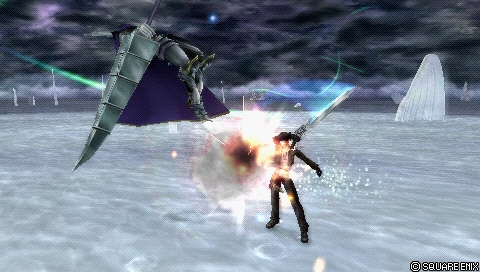
Slash rapide avec mouvement vers l'avant : poke, whiff punisher, outil de combo et de remplissage de jauge via dodge cancel, plus fiable que ses autres braveries au sol contre les cibles mobiles. Wall Rush fiable au sol sur hit ; retarder le second coup permet d'enchaîner Beat Fang après un dodge cancel. Bon dans la plupart des matchups et des builds.
| Dégâts de base | [3, 3, 5],9 (20) [31] |
|---|---|
| Startup | 13F |
| Type | Physical |
| Priorité | Melee Low |
| EX Force | 30 |
| Effets | Wall Rush |
| Cancels | Dodge |
| CP (maîtrisé) | 30 (15) |
Solid Barrel Melee Low
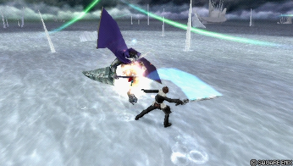
Bravery très rapide (13F) à portée courte mais avec 90 EX et un dodge cancel rapide, dont l'annulation du troisième coup ouvre le fameux « golden combo » via landing lag. La fenêtre d'input généreuse fiabilise les conversions d'assist ; surtout utilisé en block punish et après Thunder Barret plutôt qu'en poke.
| Dégâts de base | [5, 6, 8, 10, 5, 5, 16] (55) (110) |
|---|---|
| Startup | 13F |
| Type | Physical |
| Priorité | Melee Low |
| EX Force | 90 |
| Effets | Chase |
| CP (maîtrisé) | 30 (15) |
Blizzard Barret Ranged Low
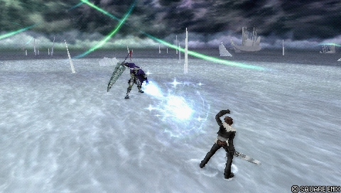
Projectile mono-coup lent et basse priorité au tracking étonnamment bon et au hit stun exploitable. Rarement prioritaire en compétitif : risque/récompense défavorable face à ses autres braveries au sol.
| Dégâts de base | 10 (10) |
|---|---|
| Startup | 33F |
| Type | Magical |
| Priorité | Ranged Low |
| EX Force | 0 |
| Cancels | Dodge |
| CP (maîtrisé) | 30 (15) |
Thunder Barret Ranged Low
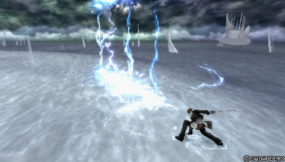
Starter de combo signature : quatre éclairs verticaux qui servent de poke disjoint à plus longue portée, d'anti-air et de punisseur d'esquive, annulable sur hit vers des combos solo incluant ses HP. Ranged Low, startup assez lent et Squall totalement immobile : utilisé de manière prévisible, il se retourne vite contre lui.
| Dégâts de base | each (3) |
|---|---|
| Startup | 33F (furthest bolt appears first) |
| Type | Magical |
| Priorité | Ranged Low |
| EX Force | each 9 |
| Cancels | Dodge, Attack (Hit) |
| CP (maîtrisé) | 30 (15) |
Fusillade Ranged Low Ranged Mid (thunder)
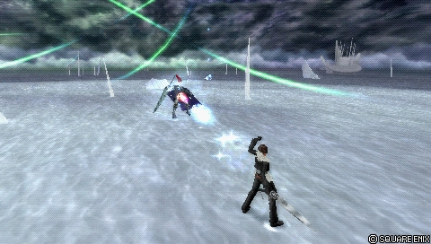
Mélange de projectiles à bonne génération d'EX (60-90), dont les deux premiers sont relativement sûrs à distance et confirmables en combo d'assist. Recouvre fonctionnellement Solid Barrel sans trait vraiment distinctif : rarement prioritaire en compétitif.
| Dégâts de base | 6, 6, 6, 6 each 6 (24+) |
|---|---|
| Startup | 33F |
| Type | Magical |
| Priorité | Ranged Low Ranged Mid (thunder) |
| EX Force | 60~90 |
| Effets | Chase |
| Cancels | Dodge |
| CP (maîtrisé) | 30 (15) |
En l’air
Heel Crush Melee Mid
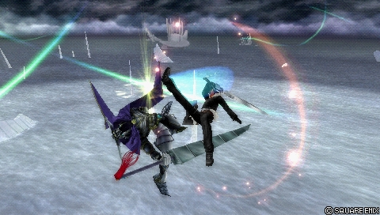
Attaque avançante Melee Mid qui bloque les Ranged Low pendant son startup (Thunder de Lightning, Heavenly Strike de Yuna) et fait stagger les adversaires qui bloquent Beat Fang. Startup long qui laisse le temps de préparer une contre-attaque ; utilisé en mixup avec Beat Fang et Fire Barret, pas indispensable dans tous les matchups.
| Dégâts de base | 20 (20) |
|---|---|
| Startup | 41F |
| Type | Physical |
| Priorité | Melee Mid |
| EX Force | 0 |
| Effets | Block Low (Ranged), Wall Rush |
| Cancels | Dodge |
| CP (maîtrisé) | 30 (15) |
Beat Fang Melee Low
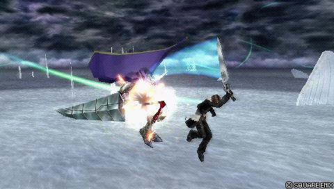
LA bravery de Squall : 15F, homing au startup, dodge cancel précoce, whiff punisher redoutable, avec une hitbox capable de toucher derrière un block à bout portant. Le Wall Rush près du sol impose une prise de décision défensive proche de l'okizeme des jeux de combat classiques. Pas de hitbox sous lui (rate contre les fast fallers et coureurs rapides comme Tidus et Tifa), recovery annulable uniquement en air dodge, et la fin du combo est punissable par Assist Change LV2.
| Dégâts de base | [3, 5], 7, [2 x 6, 13] (40) [73] |
|---|---|
| Startup | 15F |
| Type | Physical |
| Priorité | Melee Low |
| EX Force | 30 |
| Effets | Wall Rush |
| Cancels | Dodge |
| CP (maîtrisé) | 30 (15) |
Mystic Flurry Ranged Low
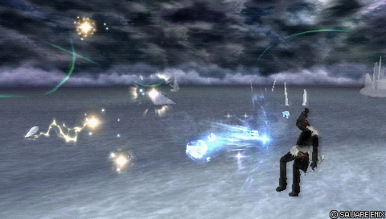
Barrage de projectiles basse priorité au comportement erratique : positionnement peu fiable, Squall totalement immobile pendant toute la durée, dodge cancel sans gain de temps. Très faible récompense pour le risque encouru ; le dernier hit d'un projectile peut toutefois Wall Rush vers un assist ou un pick-up en Beat Fang/Aerial Circle pour les joueurs audacieux.
| Dégâts de base | each 1 x 8, 7 (15) |
|---|---|
| Startup | 33F |
| Type | Magical |
| Priorité | Ranged Low |
| EX Force | each 30 |
| Effets | Wall Rush |
| Cancels | Dodge |
| CP (maîtrisé) | 30 (15) |
Fire Barret Ranged Low
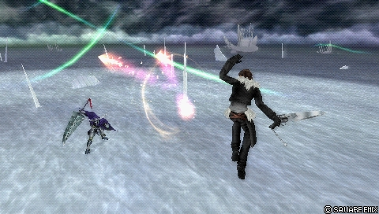
Trois boules de feu à tête chercheuse, staple aérien utilisé avec Beat Fang pour bâtir la jauge efficacement. Le hit stun de chaque projectile ouvre des suites sur bonne lecture, et la recovery s'annule en attaque (souvent Beat Fang) même à bout portant. Squall reste brièvement immobile après le tir : vulnérable à un whiff punish d'assist bien minuté.
| Dégâts de base | each (5) |
|---|---|
| Startup | 33F |
| Type | Magical |
| Priorité | Ranged Low |
| EX Force | 0 |
| Cancels | Dodge |
| CP (maîtrisé) | 30 (15) |
Attaques HP
Au sol
Fated Circle Ranged High
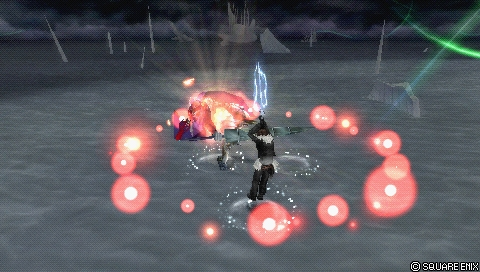
Explosion circulaire Ranged High : insensible aux blocks et à l'Assist Change LV2, Wall Rush, contourne les checkmates EX Revenge (pas de dégâts de bravery) et bloque même les Ranged Low. Sur un adversaire au sol, le knockback provoque souvent un Wall Rush au sol exploitable avec assist. Souvent éclipsé par ses autres HP au sol, mais excellent en troisième HP.
| Startup | 43F |
|---|---|
| Priorité | Ranged High |
| EX Force | 0 |
| Effets | Block Low (Ranged) Wall Rush, Absorb |
| Cancels | Dodge |
| CP (maîtrisé) | 30 (15) |
Revolver Drive Melee High
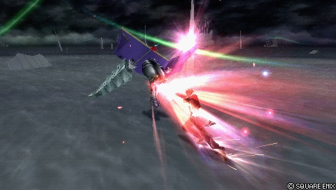
HP multi-hit dirigeable librement (bouton maintenu pour prolonger) : block punisher, starter/ender de combo d'assist, jusqu'à 150 EX générés (dont il ne récupère qu'environ 40-50 % sans bonus). Sa vitesse augmente drastiquement pendant les ralentis d'appel d'assist et d'Assist Change, ce qui permet des surprises et des conversions sans mur. Percé par les priorités imblocables (Thunder Crest de The Emperor, Black Hole d'Exdeath) et limité au sol, avec une durée maximale à gérer.
| Dégâts de base | 1 x N (max 50) |
|---|---|
| Startup | 43F |
| Type | Physical |
| Priorité | Melee High |
| EX Force | each 3 |
| Effets | Wall Rush |
| Cancels | Dodge |
| CP (maîtrisé) | 30 (15) |
Blasting Zone Melee High
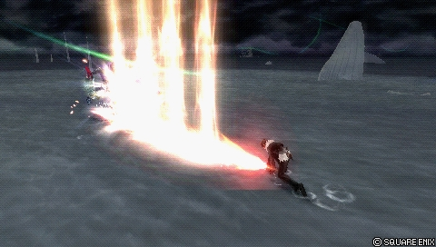
Un de ses HP les plus rapides et les plus forts : portée et hauteur énormes, tracking puissant jusqu'à l'impact, assists qui enchaînent sans mur et 90 EX. Recovery très courte, quasi impunissable sans Omni Ground Dash, invincibilité d'air dodge ou assist. Fantastique pour capitaliser sur une esquive prévisible, déranger les adversaires dans leurs pièges et refléter des projectiles haute priorité persistants (Windburst de Vaan).
| Dégâts de base | 6, 1 x 4 (10) |
|---|---|
| Startup | 41F |
| Type | Magical |
| Priorité | Melee High |
| EX Force | 90 |
| CP (maîtrisé) | 30 (15) |
Rough Divide Melee High
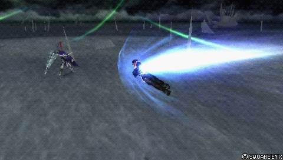
Charge aérienne longue distance en un seul coup. La version au sol est généralement surclassée par ses autres HP ; la version aérienne sert de whiff punisher longue portée (après Assist Change LV1 notamment) et crée bien plus de distance qu'Aerial Circle si l'adversaire s'échappe en Assist Change, mais reste secondaire et vulnérable aux blocks haute priorité (Omni Block d'Exdeath, Jecht Block).
| Startup | 59F |
|---|---|
| Priorité | Melee High |
| EX Force | 0 |
| Effets | Wall Rush |
| Cancels | Dodge |
| CP (maîtrisé) | 30 (15) |
En l’air
Aerial Circle Ranged High
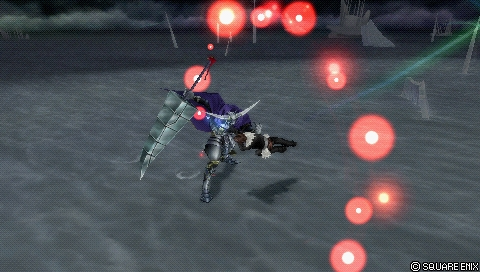
HP aérien de référence, variante verticale de Fated Circle avec les mêmes atouts (Ranged High mono-coup, absorb, Wall Rush, block des Ranged Low). L'absorb aspire les adversaires immobiles pour infliger du HP après un blodge ou un Assist Change LV2. Sa grande force : la meter depletion avec l'assist Yuna, qui le fait toucher plusieurs fois sans mur, la depletion s'appliquant à chaque hit. Attention à l'assist adverse appelé juste avant l'impact, synonyme de Bravery Break.
| Startup | 43F |
|---|---|
| Priorité | Ranged High |
| EX Force | 0 |
| Effets | Block Low (Ranged) Wall Rush, Absorb |
| Cancels | Dodge |
| CP (maîtrisé) | 30 (15) |
Rough Divide Melee High
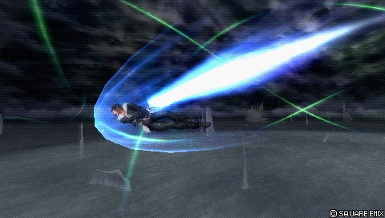
Charge aérienne longue distance en un seul coup. La version au sol est généralement surclassée par ses autres HP ; la version aérienne sert de whiff punisher longue portée (après Assist Change LV1 notamment) et crée bien plus de distance qu'Aerial Circle si l'adversaire s'échappe en Assist Change, mais reste secondaire et vulnérable aux blocks haute priorité (Omni Block d'Exdeath, Jecht Block).
| Startup | 59F |
|---|---|
| Priorité | Melee High |
| EX Force | 0 |
| Effets | Wall Rush |
| CP (maîtrisé) | 30 (15) |
EX Mode: Lionheart equipped! & EX Burst
EX Mode « Lionheart equipped! » : Regen, Critical Boost, Lionheart (RANGE) et Lionheart (HIT). La portée du gunblade augmente (ce qui aide notamment à connecter le Golden Combo), et Upper Blues, Solid Barrel et Beat Fang gagnent des coups doublés sur la plupart de leurs hits — Solid Barrel en profite le plus (dégâts de base x2) — qui peuvent eux aussi devenir critiques.
Ses braveries de combo peuvent alors pulvériser la bravery adverse : lancer un combo d'assist avec une bravery en EX Mode est un bon levier de comeback et de Bravery Break, l'EX Burst étant lui plutôt faible.
EX Burst : Renzokuken demande huit pressions de R quand le curseur passe dans la zone « Trigger », avec un timing généreux et régulier : une fois les premières pressions calées, le reste suit au même rythme. Squall exécute toute la séquence quoi qu'il arrive ; un trigger raté réduit simplement les dégâts du coup concerné.
Plan de jeu & techniques avancées
Au sol, la boucle est simple : poker avec Upper Blues et Solid Barrel (dodge cancel pour remplir la jauge), contrôler l'espace avec Thunder Barret et convertir chaque touche. Thunder Barret > Solid Barrel est le combo de base (67 de dégâts, 126 EX), Thunder Barret > Blasting Zone la conversion HP la plus tolérante, et le « Golden Combo » (Solid Barrel > Upper Blues > Beat Fang via landing lag) maximise dégâts et jauge d'assist contre les joueurs humains.
En l'air, tout tourne autour de Beat Fang : poke, whiff punish, cross-up de block et Wall Rush près du sol pour un jeu d'oppression à la relevée. Fire Barret le complète pour bâtir la jauge et créer des conversions, Heel Crush couvre les Ranged Low et les blocks, et Aerial Circle sert de HP polyvalent, y compris en counter fiable après un Assist Change LV2.
La gestion des ressources est un axe central : les combos au sol finis en Revolver Drive ou Blasting Zone génèrent beaucoup d'EX (son point faible en l'air), et les EX Cores restent une source indispensable. Avec Yuna, Aerial Circle synchronisé sur le troisième hit de son assist BRV aérien inflige une depletion massive à chaque hit ; en EX Revenge, l'enchaînement Heel Crush x3 > Aerial Circle fonctionne à peu près partout.
Défensivement, Squall dépend de ses esquives, qui l'exposent : contre les fast fallers et les personnages rapides, il faut accepter de clasher avec Beat Fang, jouer la distance ou adopter le build Adamant Chains pour sécuriser les air dodges, au prix d'une partie des dégâts et de la depletion.
Techniques spécifiques
Golden Combo
Solid Barrel (3 coups) > dodge cancel > landing lag > Upper Blues (2 coups) > dodge cancel > landing lag > Beat Fang. Trois braveries avec bonus de « fresh move » sur la jauge d'assist (117 avec Comrade's Vow) ; les hits de Solid Barrel doivent être retardés au maximum. Techniquement esquivable au timing parfait, donc surtout efficace contre les humains ; amplifié par l'EX Mode.
Revolver Drive assist slowdown
Pendant les ralentis d'appel d'assist ou d'Assist Change, la vitesse de déplacement de Revolver Drive augmente drastiquement : de quoi fondre sur l'adversaire, créer de la distance, ou dépasser l'adversaire pour qu'un assist convertisse sans mur.
Depletion Yuna + Aerial Circle
En pressant Aerial Circle au moment où le deuxième/troisième hit de l'assist BRV aérien de Yuna touche, le knockback est annulé et le HP frappe plusieurs fois : aucune HP supplémentaire (hors Wall Rush) mais la meter depletion s'applique à chaque hit — la plus forte du jeu, sans mur requis.
Counter Assist Change LV2 (Aerial Circle)
Après avoir fait stagger l'adversaire avec un Assist Change LV2, Aerial Circle inflige du HP de manière fiable grâce à son absorb et à sa priorité Ranged High.
Beat Fang cross-up
Beat Fang possède une hitbox capable de toucher derrière un adversaire qui bloque à très courte distance, ignorant le block ; sa deuxième montée esquive aussi certaines interruptions (Dreary Cell de The Emperor, assists appelés en réaction).
Routes de combo solo recensées
Le plus grand utilisateur de landing lag du jeu ; des combos nombreux mais presque tous serrés : Thunder Barret > n'importe quoi ; le « Golden Combo » Solid Barrel (4 hits) > dodge cancel > landing lag > Upper Blues (2 hits, avec délai avant le second) > DC > landing lag > Beat Fang ; Beat Fang > DC > landing lag > Beat Fang (extrêmement précis, plus simple en EX) ; Mystic Flurry > DC > Beat Fang ou Aerial Circle (inconstant) ; Fire Barret > Beat Fang ; Blizzard Barret > Thunder Barret (une boucle est proche de fonctionner mais non prouvée).
Sources : pastebin.com/8FWDXjvJ
Combos documentés (notation d'origine, dissidia.wiki)
Main article: Squall (Combos)
Squall can do various combos alone. Almost anything works after Thunder Barret, while landing lag opens up even more elaborate and rewarding combo routes.
Main article: Squall Combos (Kuja Assist)
Techniques universelles (blodge, dash feint, lock off, dodge punishment) : voir la page Techniques & glitches.
Matchups
La page matchups du wiki est un stub ; seuls les éléments de l'overview sont exploitables. Squall prend plus de risques contre les fast fallers qui esquivent en l'air (Prishe, Tidus) et les coureurs très rapides (Onion Knight, Tifa) : la plupart de ses coups, Beat Fang en tête, ratent contre ces profils, alors que sa défense dépend d'esquives qui l'exposent. Le build Adamant Chains atténue le problème au prix de ses dégâts et de sa depletion. Le reste du temps, ses outils fiables et sa punition défensive facile lui permettent de rivaliser largement.
Vidéos de matchs : Replay Theater — matchs de Squall Leonhart.
Builds
Cinq builds sont documentés, tous à 450 CP en supposant l'Equip Glitch et presque tous avec l'assist Kuja. Le build Hybrid (set Lufenian « Judgment of Lufenia », Lionheart, booster x3.5) est l'all-rounder généraliste de référence.
Adamant Chains (booster x3.5) exploite le bonus de distance d'esquive aérienne du set pour couvrir la vraie faiblesse de Squall : ses air dodges vulnérables. L'arme s'ajuste au matchup, et contre Onion Knight, Jecht ou Cloud, on adapte les accessoires vers Side by Side pour la jauge d'assist ; Hero's Essence, Winged Boots (anti-pièges) et Glutton (contre les gros générateurs d'EX comme Lightning et Shantotto) sont cités.
Le build EX Core (set Genji, booster x5.3) mise sur l'absorption d'EX via les cores, sa principale source de jauge. Side by Side (Piggy's Stick, Together as One, booster x3.8) est recommandé sur petites scènes et matchups égaux ou favorables : deux whiffs suffisent pour une barre d'assist et chaque stagger à l'Assist Change LV2 converti en Aerial Circle entretient l'avance de meter. Enfin, le build Meter Depletion (set Lufenian, assist Yuna, booster x6.9) exécute la boucle Aerial Circle + assist BRV aérien de Yuna : chaque hit HP supplémentaire déplète la jauge adverse sans dégâts additionnels.
| Stats | |
|---|---|
| HP | 10299 |
| CP | 450 |
| BRV | 996 |
| ATK | 177 |
| DEF | 185 |
| LUK | -- |
| Max Booster | x3.5 |
| Equipment | |
|---|---|
| Assist | Kuja |
| Weapon | Lionheart |
| Hand | Lufenian Shield |
| Head | Lufenian Helm |
| Body | Lufenian Armor |
| Accessory 1 | Hyper Ring |
| Accessory 2 | Zephyr Cloak |
| Accessory 3 | Dismay Shock |
| Accessory 4 | Large Gap in HP |
| Accessory 5 | Summon Unused |
| Accessory 6 | Pre-EX Mode |
| Accessory 7 | Pre-EX Revenge |
| Accessory 8 | Tenacious Attacker |
| Accessory 9 | Glutton |
| Accessory 10 | First to Victory |
| Summon | Rubicante |
| Coup | Type | Où l’équiper | CP |
|---|---|---|---|
| Aerial Circle | HP | En l’air | 30 |
| Beat Fang | Bravery | En l’air | 30 |
| Blasting Zone | HP | Au sol | 30 |
| Blizzard Barret | Bravery | Au sol | 30 |
| Fated Circle | HP | Au sol | 30 |
| Fire Barret | Bravery | En l’air | 30 |
| Fusillade | Bravery | Au sol | 30 |
| Heel Crush | Bravery | En l’air | 30 |
| Mystic Flurry | Bravery | En l’air | 30 |
| Revolver Drive | HP | Au sol | 30 |
| Rough Divide | HP | Au sol | 30 |
| Rough Divide | HP | En l’air | 30 |
| Solid Barrel | Bravery | Au sol | 30 |
| Thunder Barret | Bravery | Au sol | 30 |
| Upper Blues | Bravery | Au sol | 30 |
Le wiki laisse vide le tableau des coups équipés de ce ou ces builds : ce moveset n'est pas documenté. À défaut, voici le coût en CP de chaque coup, à mettre en regard du total du build. Les coups les plus chers sont en haut.
| Stats | |
|---|---|
| HP | 9972 |
| CP | 450 |
| BRV | 877 (1052 with First to Victory) |
| ATK | 178 |
| DEF | 185 |
| LUK | -- |
| Max Booster | x3.5 |
| Equipment | |
|---|---|
| Assist | Kuja |
| Weapon | Earthbreaker |
| Hand | Adamant Shield |
| Head | Adamant Helm |
| Body | Adamant Vest |
| Accessory 1 | Muscle Belt |
| Accessory 2 | Dismay Shock |
| Accessory 3 | Battle Hammer |
| Accessory 4 | Summon Unused |
| Accessory 5 | Pre-EX Mode |
| Accessory 6 | Pre-EX Revenge |
| Accessory 7 | Aerial |
| Accessory 8 | Tenacious Attacker |
| Accessory 9 | First to Victory |
| Accessory 10 | Back-Breaking Straw |
| Summon | Rubicante |
| Stats | |
|---|---|
| HP | 10299 |
| CP | 450 |
| BRV | 996 |
| ATK | 177 |
| DEF | 185 |
| LUK | -- |
| Max Booster | x5.3 |
| Equipment | |
|---|---|
| Assist | Kuja |
| Weapon | Lionheart |
| Hand | Genji Shield |
| Head | Genji Helm |
| Body | Genji Armor |
| Accessory 1 | Sniper Eye |
| Accessory 2 | Dragonfly Orb |
| Accessory 3 | Battle Hammer |
| Accessory 4 | EX Core Present |
| Accessory 5 | Summon Unused |
| Accessory 6 | Pre-EX Mode |
| Accessory 7 | Pre-EX Revenge |
| Accessory 8 | Aerial |
| Accessory 9 | Tenacious Attacker |
| Accessory 10 | First to Victory |
| Summon | Rubicante |
| Stats | |
|---|---|
| HP | 9971 |
| CP | 450 |
| BRV | 1453 (2179 with Hero's Seal) |
| ATK | 176 |
| DEF | 182 |
| LUK | -- |
| Max Booster | x3.8 |
| Equipment | |
|---|---|
| Assist | Kuja |
| Weapon | Piggy's Stick |
| Hand | Hero's Shield |
| Head | Royal Crown |
| Body | Maximillian |
| Accessory 1 | Sniper Eye |
| Accessory 2 | Dismay Shock |
| Accessory 3 | Battle Hammer |
| Accessory 4 | BRV = 0 |
| Accessory 5 | Empty EX Gauge |
| Accessory 6 | Pre-EX Mode |
| Accessory 7 | Pre-EX Revenge |
| Accessory 8 | Hero's Seal |
| Accessory 9 | Together as One |
| Accessory 10 | Side by Side |
| Summon | Rubicante |
| Stats | |
|---|---|
| HP | 10298 |
| CP | 450 |
| BRV | 996 |
| ATK | 179 |
| DEF | 182 |
| LUK | -- |
| Max Booster | x6.9 |
| Equipment | |
|---|---|
| Assist | Yuna |
| Weapon | Lufenian Lance |
| Hand | Lufenian Dirk |
| Head | Lufenian Headband |
| Body | Maximillian |
| Accessory 1 | Dismay Shock |
| Accessory 2 | Battle Hammer |
| Accessory 3 | BRV = 0 |
| Accessory 4 | Assist |
| Accessory 5 | Summon Unused |
| Accessory 6 | Pre-EX Mode |
| Accessory 7 | Pre-EX Revenge |
| Accessory 8 | Aerial |
| Accessory 9 | Free choice |
| Accessory 10 | Free choice |
De nombreux substituts sont listés par build (Sniper Eye, Dragonfly Orb, Dismay Shock, Muscle Belt, Together as One, Platinum Hourglass, Hyper Ring, Bravery Orb, boosters Large Gap in HP / Summon Unused / Grounded / Aerial / Assist, spéciaux Blue Gem / Growth Egg / Great Gospel / Winged Boots / Hero's Essence / Badge of Trust). La statistique LUK n'est renseignée pour aucun build.
Synergies d'assist
Squall Leonhart en tant qu'assist
Les sources ne documentent pas les coups de Squall en tant qu'assist ; sa section assist du wiki est consacrée aux assists qu'il utilise. Sur la tier list assist de Muggshotter, Squall est classé Low.
Assists recommandées
- Kuja — Le plus fort : gros dégâts et conversions fiables sur Wall Rush et braveries, sûr contre l'Assist Change LV2 grâce à la priorité Ranged High du HP Flare Star, qui fonctionne bien après Beat Fang et Upper Blues. Vulnérable en revanche si l'adversaire s'échappe en Assist Change.
- Yuna — La meter depletion la plus forte, n'importe où sur la scène, via la synchronisation Aerial Circle + troisième hit de son assist BRV aérien ; sa priorité Ranged Low la protège du stagger de l'Assist Change LV2.
- Jecht — Bon all-rounder : startup rapide qui convertit presque n'importe quel hit (même échangé), et suivis en Thunder Barret dès qu'il y a du sol, pour une profusion d'enders Revolver Drive très généreux en EX.
- Tidus — Assist BRV aérien rapide pour les whiff punishes, relativement sûr, avec une version au sol plus lente mais plus dommageable via Thunder Barret ; utilisable sans avantage vraiment distinctif.
- The Emperor — Jeu au sol renforcé et mines très dommageables via les Wall Rush de Beat Fang ; Thunder Crest se combote facilement, ne stagger pas à l'Assist Change LV2 et verrouille l'assist adverse grâce à sa priorité imblocable.
- Aerith — Conversion vers Seal Evil possible même sans sol grâce au potentiel de maintien de Squall, et regain partiel de jauge pendant le Seal Evil avec Ground Dash + Assist Gauge Up Dash ; mais Cure sans hit stun compromet les conversions au sol et sa depletion est la plus faible — un des choix méta les plus faibles pour lui.
Tech communautaire
Dissidia 012 Duodecim Final Fantasy Squall Combo Montage 2011
Montage de combos d'époque (Andyz5448) : recueil de routes solo et avec assist de Squall, démontrées contre des adversaires niveau 105 aux réglages maximaux.
Dissidia 012 Duodecim Squall Revolver Damage Assist Build 2011
Vidéo de build d'époque (Tiger Bub) : configuration dégâts + assist articulée autour de Revolver Drive, avec le détail des abilities (Assist Critical Boost, etc.).
Liste de combos solo de tout le cast (Eddiegames) 2022
Relevé communautaire des routes de combo solo des 31 personnages, rédigé par Eddiegames sur le Discord DISSIDIA et publié en pastebin (dernière mise à jour décembre 2022). Squall y est décrit comme le plus grand utilisateur de landing lag du jeu, avec son « Golden Combo » en signature.
Sources
- https://dissidia.wiki/Squall_Leonhart_(Dissidia_012)
- https://www.youtube.com/watch?v=OSazQtfzckk
- https://www.youtube.com/watch?v=QEQCjqOH_Ng
- https://pastebin.com/8FWDXjvJ
- https://dissidia.wiki/Tier_List_(Dissidia_012)
- https://dissidia.wiki/Tier_List_(Assist)
Limites connues
- Pas de section « mécaniques uniques » : le wiki la marque non documentée (documented: false) pour Squall.
- La page matchups est un stub sans contenu : le résumé des matchups repose uniquement sur les indices de l'overview.
- Aucune référence externe (section References vide) : pas de communityTech attribuable.
- La statistique LUK des builds n'est jamais renseignée (« -- »), et les gains de jauge d'assist (assistGain) sont vides pour tous les coups.
- Les listes d'attaques recommandées par build (tableaux « Bravery attacks / HP attacks ») sont vides dans les données extraites, contrairement à celles de Tifa.